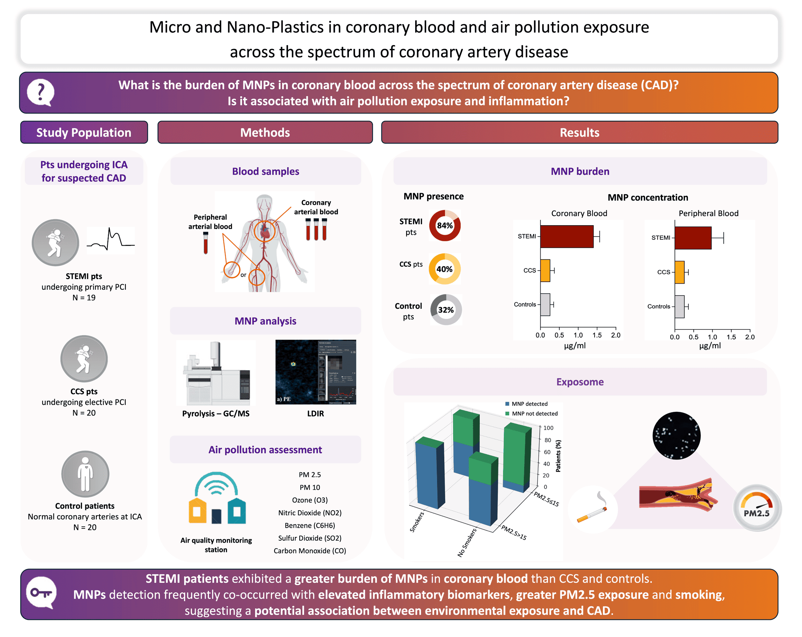
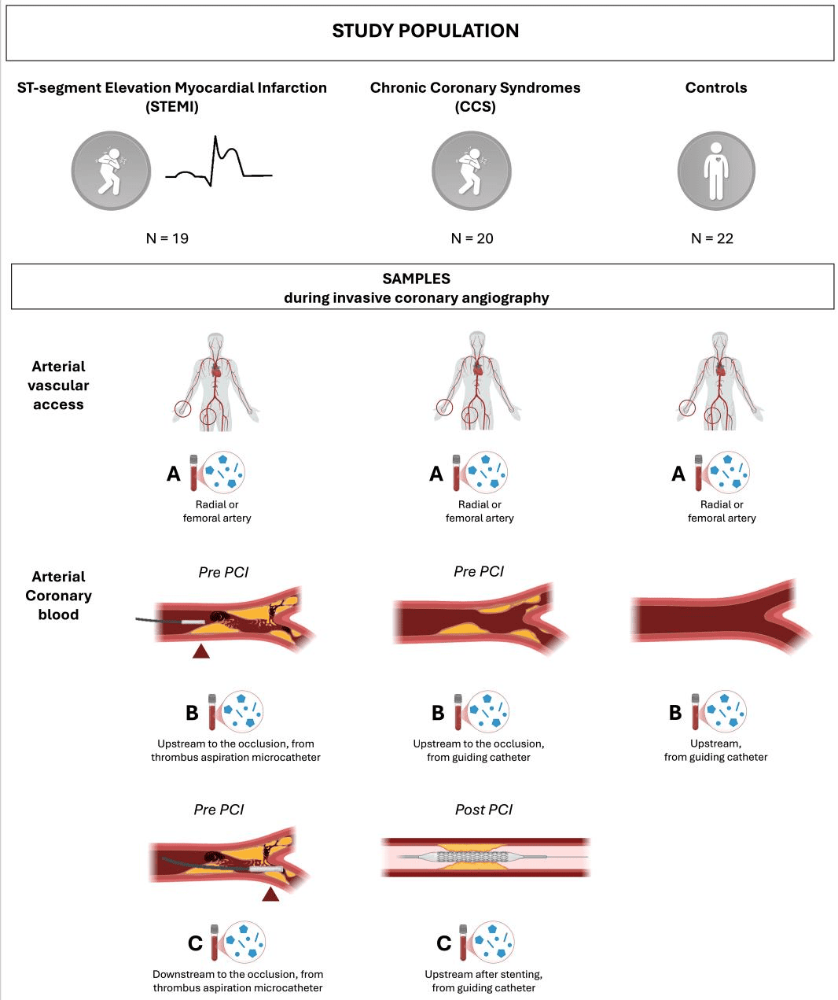
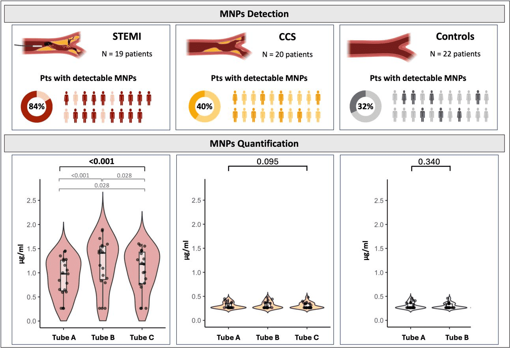
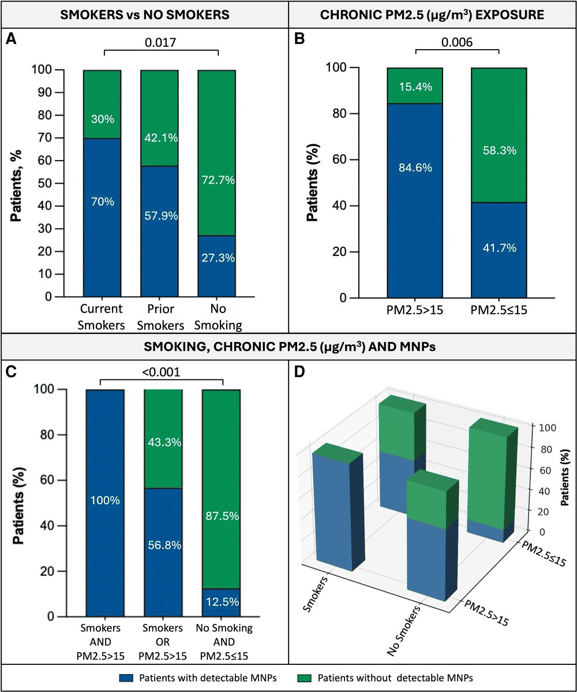
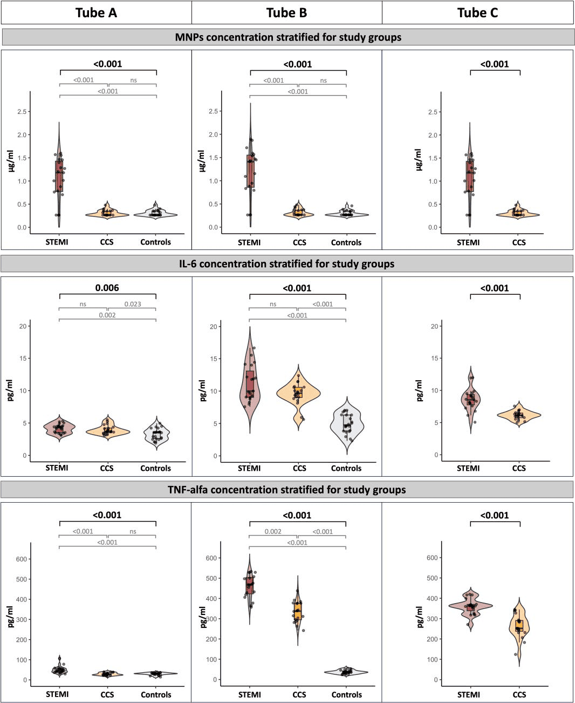

Quanto mais grave o quadro cardíaco, mais plástico no sangue que irriga o coração.
Pesquisadores da Universidade de Campania e de outras cinco instituições italianas coletaram sangue diretamente das artérias coronárias de 61 pacientes durante cateterismo — e não apenas do braço, como em estudos anteriores.
O resultado, publicado no European Heart Journal, mostrou um gradiente claro: partículas plásticas apareceram em 84,2% dos pacientes com infarto agudo (STEMI), em 40% dos pacientes com doença coronária crônica e em 31,8% das pessoas com artérias completamente normais.

Sangue coletado direto de dentro da artéria entupida.
Em vez de medir plástico apenas no sangue periférico (do braço), a equipe coletou amostras em pontos estratégicos durante o próprio procedimento de desobstrução da artéria: antes da lesão, depois da lesão, e no sangue periférico de cada paciente. Isso permitiu comparar, pela primeira vez de forma direta, a concentração de plástico exatamente no local do evento cardíaco.
Nos pacientes com infarto, o tubo coletado mais próximo da obstrução (Tubo B) apresentou a maior concentração de micro e nanoplásticos — mais alta até do que o sangue periférico do mesmo paciente. Nos grupos sem infarto agudo, essa diferença entre pontos de coleta não apareceu.
O plástico mais encontrado foi o polietileno (PE), presente em 97% dos pacientes com partículas detectáveis — o polímero mais produzido no mundo, usado em embalagens, garrafas e uma infinidade de objetos do dia a dia.

Ao todo, foram testados 11 tipos de polímero. Seis deles apareceram nas amostras — e o número de tipos diferentes de plástico por paciente também seguiu o gradiente de gravidade: mediana de 3 tipos nos pacientes com infarto, contra no máximo 2 tipos nos outros grupos.

Como um pedaço de plástico microscópico chega à artéria coronária.
O estudo não prova esse caminho passo a passo, mas reúne evidências consistentes com a hipótese de que a inalação — pela respiração ou pelo cigarro — é a principal porta de entrada.
Fragmentação ambiental
Garrafas, embalagens e resíduos plásticos se degradam ao sol, no vento e na água, formando partículas cada vez menores.
Inalação e ingestão
As partículas ficam suspensas no ar (inclusive como PM2,5) e são inaladas; outra parte é ingerida via água, alimentos e sal.
Corrente sanguínea
Fumar parece facilitar a passagem: rompe a barreira epitelial das vias respiratórias, favorecendo a entrada de partículas no sangue.
Depósito na artéria
Em modelos animais, as partículas geram inflamação e estresse oxidativo — processos ligados à instabilidade da placa que causa o infarto.
Essa cadeia de eventos ganha força estatística nos próprios dados do estudo: cigarro e poluição por PM2,5 apareceram lado a lado com a presença de plástico no sangue.

O plástico aparece ao lado de marcadores de inflamação mais altos.
Pacientes com infarto agudo tinham níveis significativamente mais altos de duas moléculas inflamatórias — IL-6 e TNF-α — sobretudo no sangue coletado direto da coronária. E dentro de cada grupo, quem tinha microplástico detectável apresentava esses marcadores ainda mais elevados do que quem não tinha.

Isso não prova que o plástico causa a inflamação — pode ser o contrário, ou os dois podem ter uma origem comum. Mas o padrão é consistente com o que já se via em laboratório: em células e animais, micro e nanoplásticos provocam inflamação, estresse oxidativo e disfunção do revestimento interno dos vasos sanguíneos.
Na análise estatística que tenta isolar o fator mais decisivo entre todos os avaliados, um resultado se destacou:
Os próprios autores e o cardiologista argentino Iñaki Álvarez Amuchástegui, que comentou a pesquisa para a imprensa, fazem uma ressalva importante:
O que os dados mostram, resumido.
| Indicador | Valor | Grupo / condição |
|---|---|---|
| Pacientes com MNPs detectados | 84,2% | Infarto agudo (STEMI) |
| Pacientes com MNPs detectados | 40% | Doença coronária crônica (CCS) |
| Pacientes com MNPs detectados | 31,8% | Controles, artérias normais |
| Diversidade de polímeros por paciente | 3 (2–4) | Mediana em pacientes STEMI |
| Polímero mais frequente | 97% | Polietileno (PE) |
| MNPs em fumantes + PM2,5 > 15 µg/m³ | 100% | Todos os pacientes com os dois fatores |
| Preditor independente de MNP | OR 5,69 | Histórico de tabagismo |
| MNP como preditor de doença obstrutiva | OR 4,48 | Ajustado por sexo e dislipidemia |
Fonte: Paolisso P, Scisciola L, Belmonte M, et al. “Micro- and nano-plastics in the coronary circulation and air pollution exposure in ischaemic heart disease presentation.” European Heart Journal, 2026. DOI: 10.1093/eurheartj/ehag447.
Plástico é um fator ambiental emergente para o coração — não uma causa comprovada.
O estudo é o primeiro a comparar diretamente a carga de micro e nanoplásticos no sangue coronário ao longo de todo o espectro da doença arterial coronariana, do infarto agudo ao coração saudável. O padrão encontrado — mais plástico, mais tipos de polímero e mais inflamação exatamente nos casos mais graves — reforça a hipótese de que a poluição plástica pertence à lista de fatores de risco cardiovascular que ainda estamos aprendendo a medir.
Reduzir exposição significa, na prática, agir sobre os dois fatores que o próprio estudo aponta como mais associados: parar de fumar e diminuir a exposição crônica a PM2,5 — a poluição fina do ar que, segundo os autores, pode funcionar como veículo de transporte para essas partículas plásticas até os pulmões e daí para o sangue.